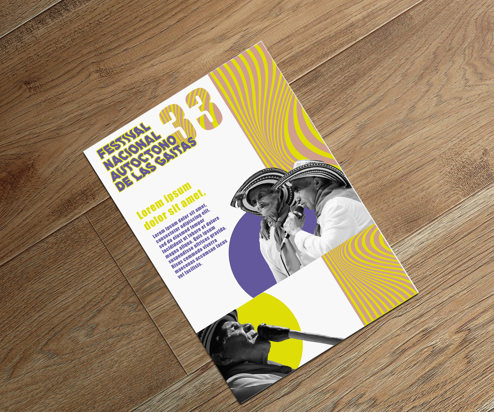
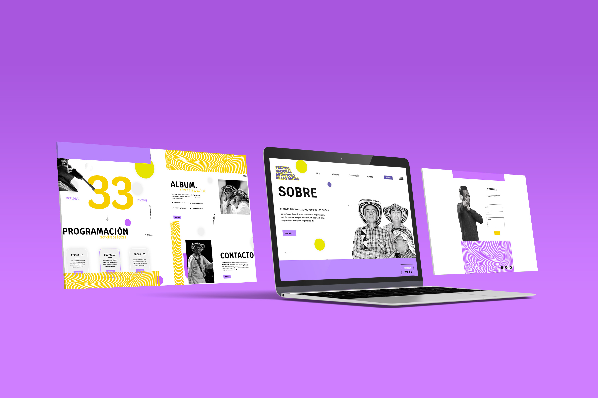
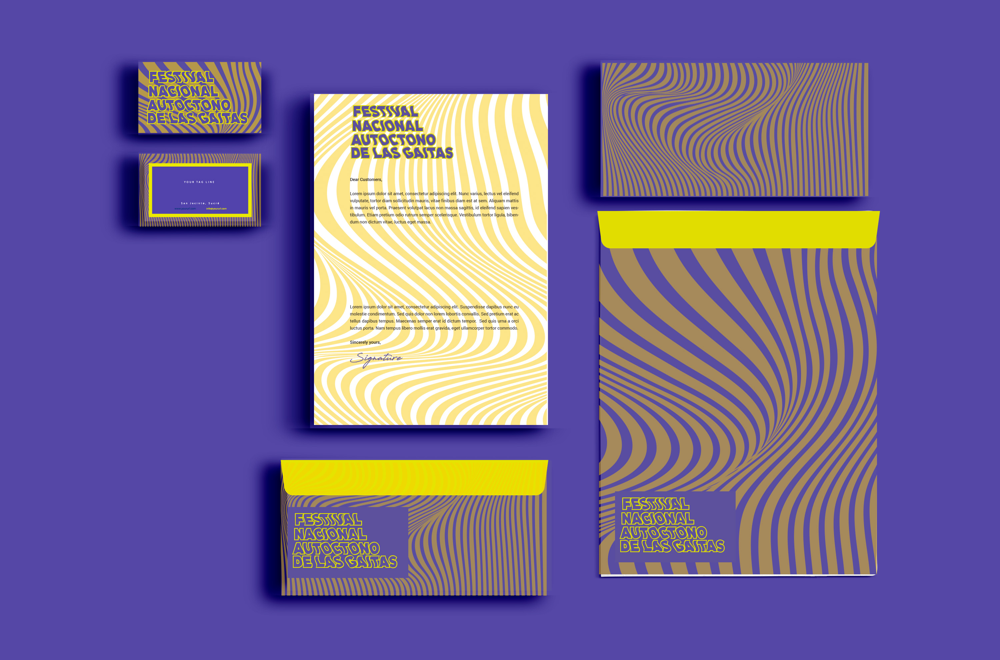
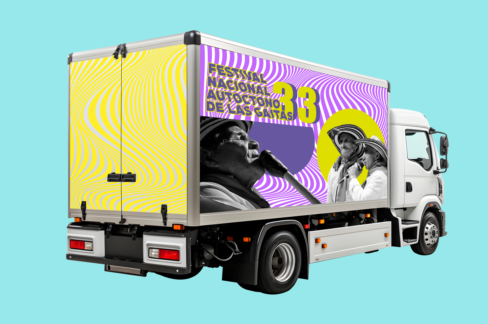

Galería





El proyecto Festival Autóctono de Gaitas es una celebración tradicional de Sincelejo, que busca resaltar la riqueza cultural y musical de la región. Este proyecto consistió en la renovación de su identidad visual, con el objetivo de modernizar su imagen sin perder la esencia folclórica que lo caracteriza. Además, se diseñaron piezas gráficas para su difusión, como carteles, entradas y elementos promocionales, con un enfoque fresco y juvenil, pero respetuoso de la tradición. Esta propuesta busca atraer a nuevas generaciones, promoviendo el reconocimiento y la preservación de la herencia cultural.